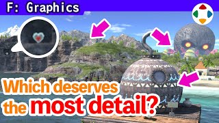
速览
游戏机总是考虑其性能来制作；大多数情况下性能比普通人想象的低，不精打细算就做不出来。这时重要的想法是分辨大事与小事，也就是看清哪里效果高、哪里低。以《大乱斗》画面构成为例：很多舞台的远景像天球，可以一定程度地环视；其中特别常被看的是画面中央附近，即便是天球，镜头正面也常被看，要更重视。手前的地形也是，比起常在画面外的地基，舞台上方更重要。斗士和舞台相比，似乎斗士优先事项多，但实际上斗士常以小尺寸显示，所以适度即可——占画面的比例才重要。不过斗士也会放大用于各种素材，所以有不只是游戏中观感的优待。还有 LOD：镜头拉远时换成低多边形的机制，但这本身也费工夫，要充分考虑性能。偶尔会看到舞台组奇妙的讲究（「今日一张」也介绍过一些），当然不是他指定的；只要赶上期限、性能在预期内，他没什么意见，有玩心也好。但墨水舞台远景中汽车的轮胎真的在转，这点他提醒并要求减轻——实在是看不见的讲究。分辨大事小事、把资源分配到最有效的地方，是精打细算做游戏不可或缺的，不限于图形。
1. 性能比想象的低 0:04
游戏机总是考虑其性能来制作。大多数情况下性能比普通人想象的还低，不精打细算就无法实现。
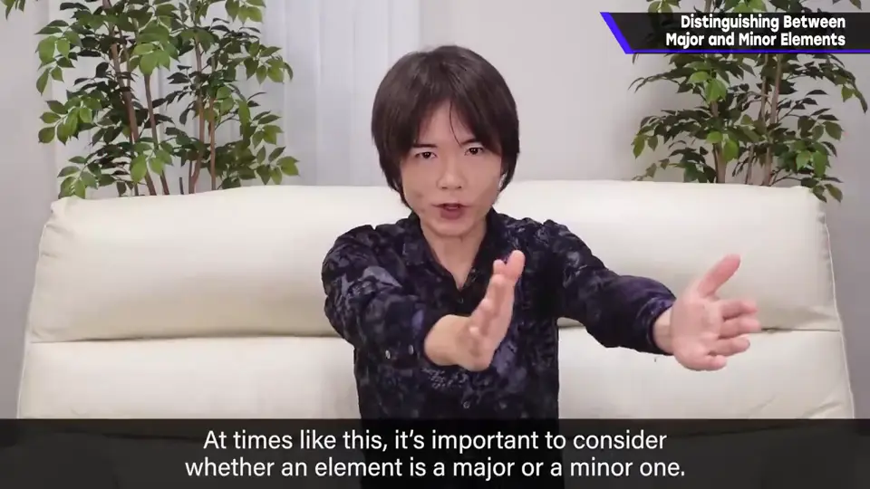
2. 画面中哪里最常被看 0:30
《大乱斗》的很多舞台，远景像天球一样可以一定程度地环视。其中特别常被看到的是画面中央附近；即便是天球，镜头正面也常被看，要更重视。
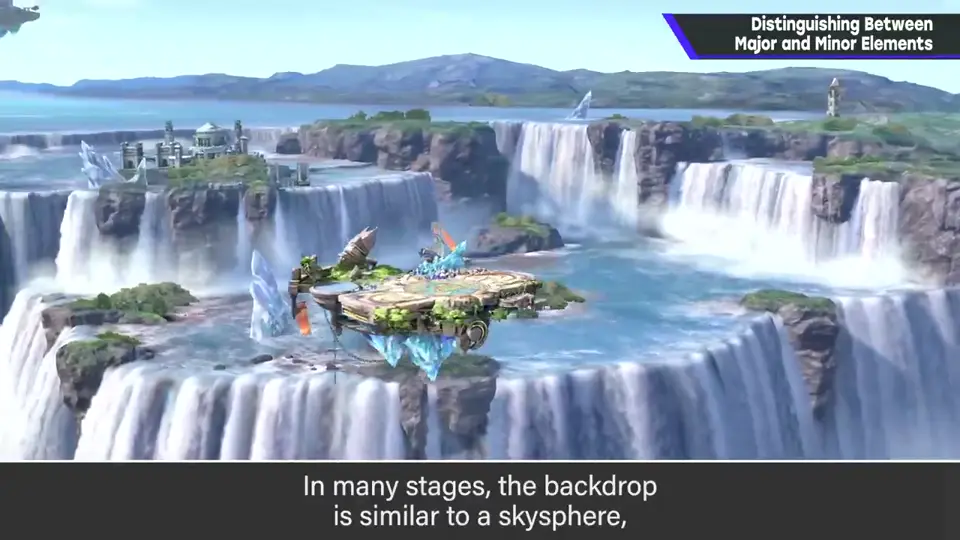
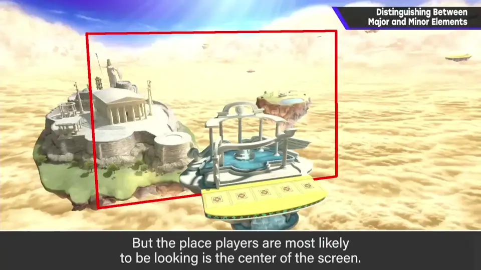
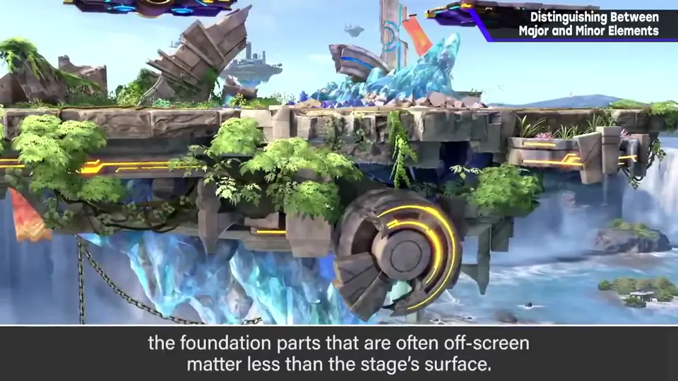
手前的地形也一样：比起常在画面外的题材（地基等），舞台上方更重要。
3. 斗士：看占屏比例 1:00
拿斗士和舞台比，似乎斗士优先的事项更多；但实际上斗士常以较小尺寸显示，所以适度即可。重要的是在整个画面中占多少比例。
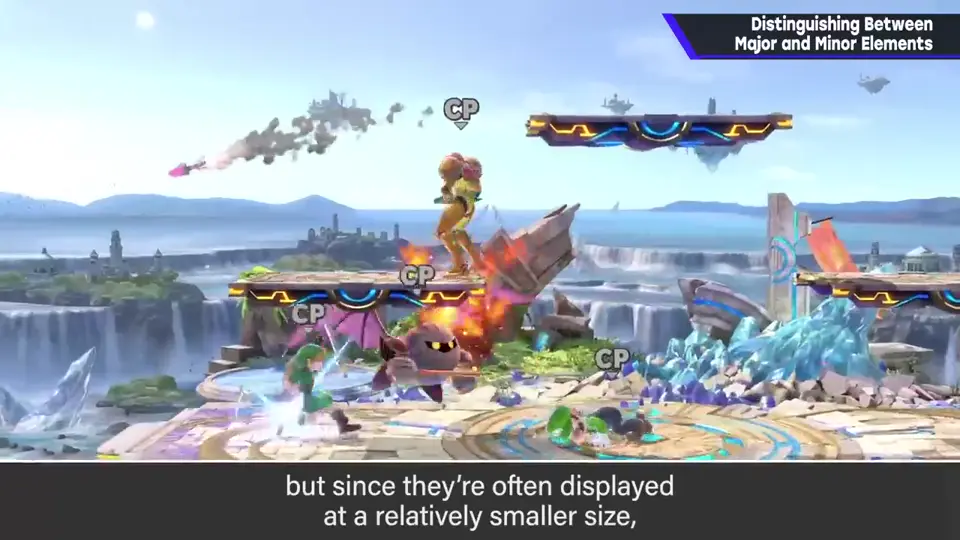
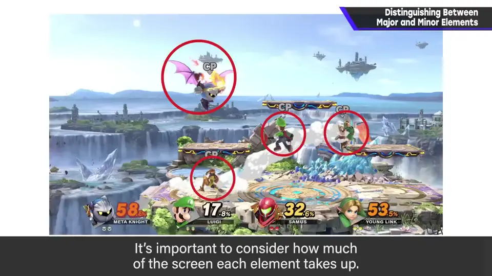
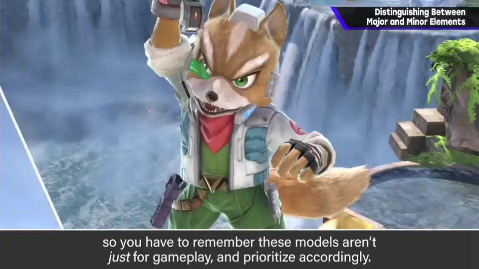
不过斗士也会放大用于各种素材，所以设定上有不只是游戏中观感的优待。
4. LOD 1:28
LOD（细节层次）：画面拉远时换成低多边形的机制。但这本身也很费工夫，要充分考虑性能后再用。
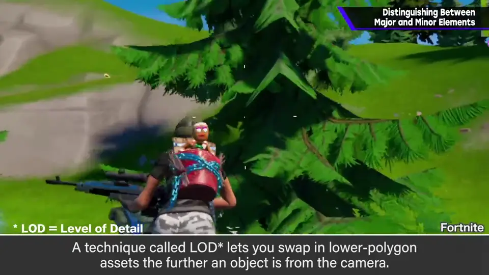
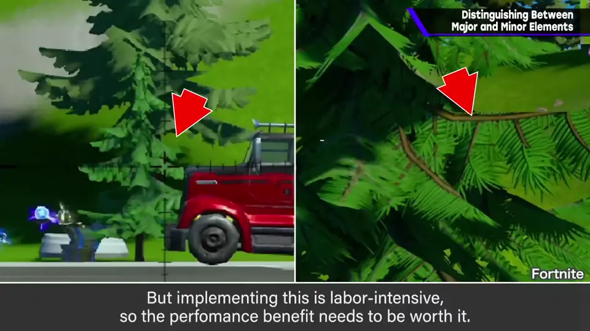
5. 看不见的讲究 1:47
偶尔会看到舞台组奇妙的讲究，「今日一张」也介绍过一些。当然这些不是他指定的；只要赶上期限、性能在预期之内，他没什么意见——有点玩心也好。
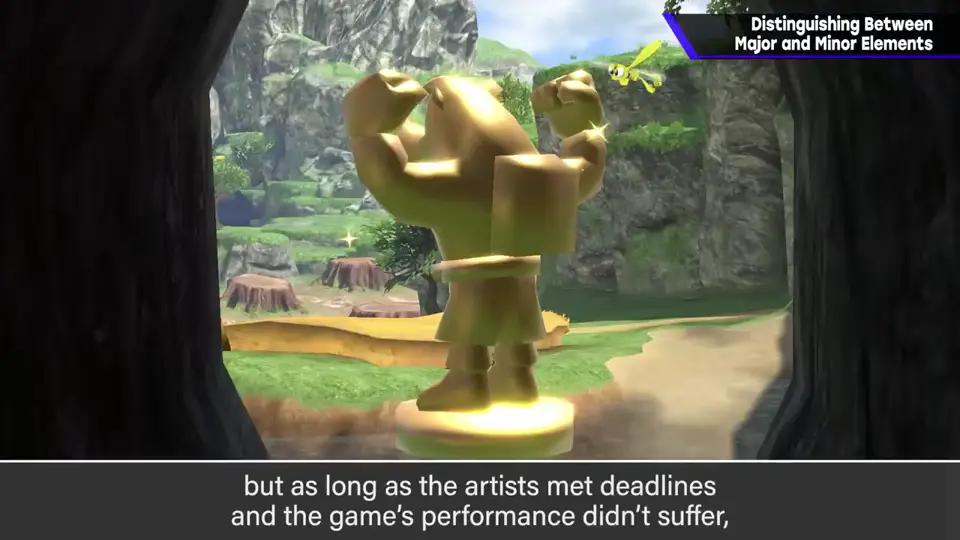
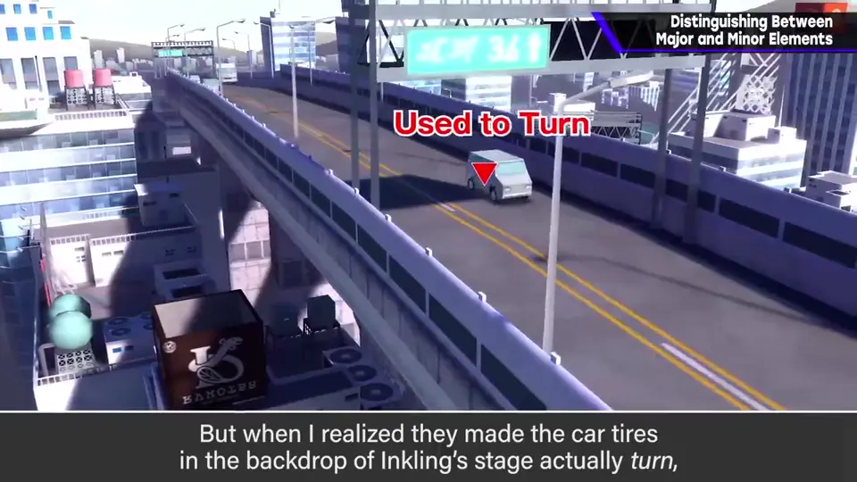
但墨水舞台远景中汽车的轮胎真的在转，这一点他提醒并要求减轻了：实在是太看不见的讲究。
自测题
1. 为什么要分辨大事与小事？
游戏机性能比想象的低，必须精打细算，把资源分给效果最高的地方。 0:15
2. 斗士为什么不一定要无限优先？
斗士常以小尺寸显示，重要的是占画面比例；但因会被放大做素材，也有一定优待。 1:05
3. 樱井要求减轻的「看不见的讲究」是什么？
墨水舞台远景里汽车的轮胎在转。 2:10